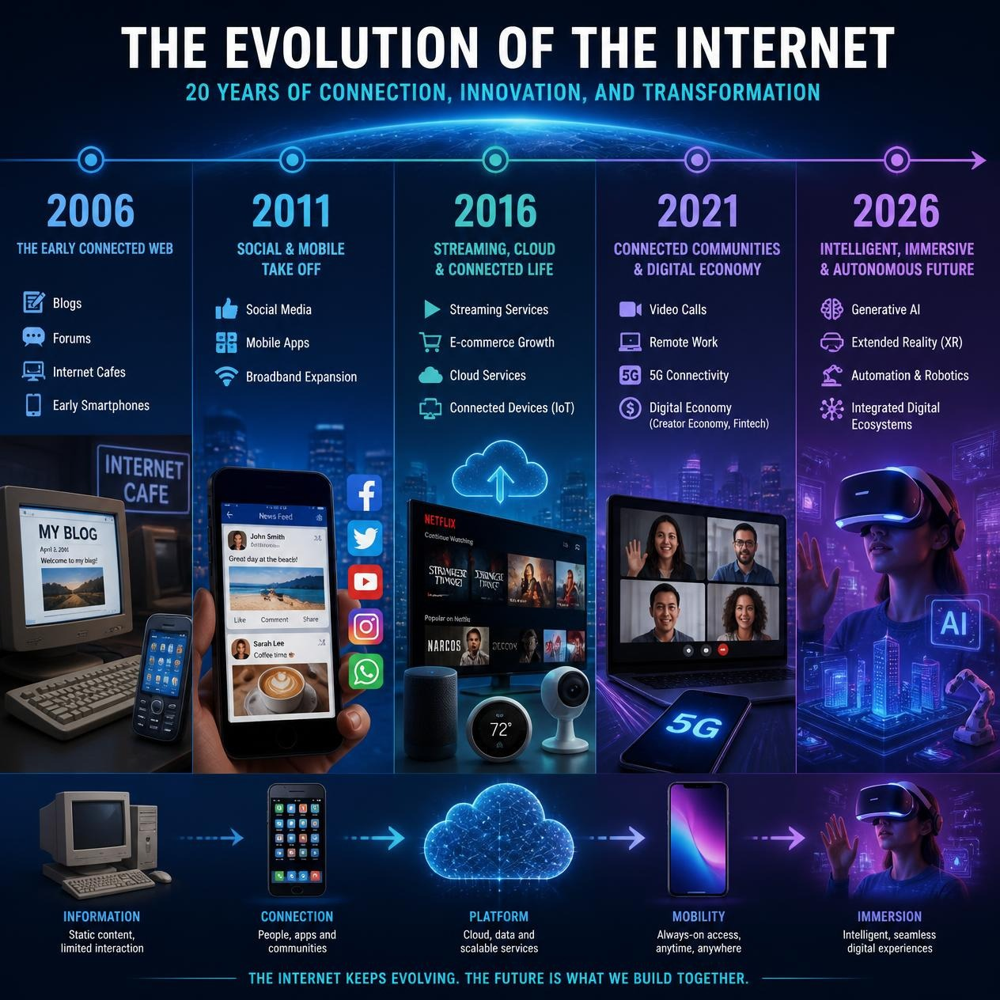

Internet ha evolucionado de manera significativa en las últimas dos décadas, desde su lanzamiento en 2005. En ese momento, la web se organizaba alrededor de enlaces, y el control de la navegación estaba en manos del usuario. Los blogs enlazaban a otros blogs, y los buscadores indexaban páginas relativamente estáticas. Sin embargo, en la actualidad, gran parte del tráfico pasa por feeds basados en algoritmos, que priorizan contenido emocional, repetitivo y polarizante para maximizar el tiempo de permanencia, interacción y retorno publicitario.
El fin de la navegación intuitiva
El feed no es neutral, sino que está diseñado para engañar al usuario con contenidos preestablecidos por otros. Esto significa que el usuario ahora consume contenidos preestablecidos por otros, en lugar de explorar y encontrar contenido de manera autónoma. Esto ha llevado a la popularización de un término como la 'enmierdización', que describe el ciclo de contenido que nos invita a sumergirnos en una secuencia infinita que nos mantiene enganchados.
Este cambio en la forma en que consumimos Internet puede ser relevante para todos nosotros. En un mundo donde la información es abundante y la atención es escasa, es importante ser conscientes de cómo podemos evitar caer en este ciclo de enmierdización y buscar formas de consumir contenido de manera más autónoma y crítica. Al entender cómo funciona el feed y cómo se utiliza para maximizar el tiempo de permanencia, podemos tomar medidas para proteger nuestra privacidad y nuestra salud mental en línea.
En conclusión, el cambio en la forma en que consumimos Internet es un tema interesante que merece ser examinado de cerca. Al entender cómo funciona el feed y cómo se utiliza para maximizar el tiempo de permanencia, podemos tomar medidas para proteger nuestra privacidad y nuestra salud mental en línea.